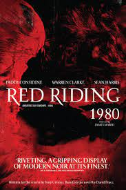

Introduzione
Andrew Russell Garfield Hillman nato a Los Angeles il 20 agosto 1983, è un attore britannico con cittadinanza statunitense.
L'attore fa il suo esordio sul grande schermo nel 2007 con il film Leoni per agnelli e sempre nel 2007 vince un British Academy Television Awards come miglior attore grazie alla sua interpretazione nel film per la televisione Boy A. Nel 2010, per il ruolo di Eduardo Saverin in The Social Network, ha ricevuto la sua prima nomination ai Golden Globe e a molti altri premi. Raggiunge la notorietà nel 2012, recitando nel ruolo del supereroe Spider-Man nei due film di Marc Webb The Amazing Spider-Man (2012) e The Amazing Spider-Man 2 - Il potere di Electro (2014), e nel più recente film appartenente al Marvel Cinematic Universe, Spider-Man: No Way Home (2021). Nel 2016 la sua interpretazione nel ruolo di Desmond Doss in La battaglia di Hacksaw Ridge di Mel Gibson gli ha valso la nomination ai Golden Globe, BAFTA, Screen Actors Guild Award, Satellite Award e al Premio Oscar al miglior attore. Nel 2022 la sua interpretazione nel ruolo di Jonathan Larson in Tick, Tick... Boom! gli è valsa il Golden Globe per il miglior attore in un film commedia o musicale e una seconda candidatura all'Oscar al miglior attore.
Alla carriera cinematografica ha affiancato anche numerose e apprezzate performance teatrali sui palchi di Londra e Broadway, recitando in drammi come Romeo e Giulietta (Manchester), Morte di un commesso viaggiatore (2011) ed Angels in America - Fantasia gay su temi nazionali (2017-2018), per cui ha vinto il Tony Award al miglior attore protagonista in un'opera teatrale.
Biografia
Andrew Garfield, figlio di madre inglese, Lynn Hillman, e padre statunitense, Richard Garfield. Suo fratello maggiore è un medico, mentre i suoi nonni paterni hanno origini russe, romene e polacche. Vive in California fino all'età di tre anni, quando la sua famiglia si trasferisce in Inghilterra, ad Epsom, nella regione del Surrey. All'età di soli nove anni appare in una commedia intitolata Bugsy Malone, ma è all'età di sedici anni che si avvicina al mondo dello spettacolo, grazie ad un amico che lo convince a frequentare una scuola di recitazione.
L'attore inizialmente frequenta la Preparatory School di Banstead e più tardi la City of London Freemen's School, ad Ashtead, per poi studiare recitazione presso la prestigiosa Royal Central School of Speech and Drama di Londra, dove si diplomerà nel 2004.
Carriera cinematografica
(2007-2009)
Nell'ottobre 2007 la rivista Variety lo inserisce tra i "10 attori da tenere d'occhio", mentre il mese successivo interpreta uno studente universitario americano nel film Leoni per agnelli e, nello stesso anno, vince il premio BAFTA per la sua interpretazione nel film Boy A, distribuito sulle televisioni britanniche da Channel 4.
Nel 2008 appare nel film L'altra donna del re e nel 2009 interpreta Anton nel film Parnassus - L'uomo che voleva ingannare il diavolo, sempre nel 2009 recita nella trilogia di film polizieschi Red Riding, andata in onda nel Regno Unito su Channel 4.
(2010-2014)
Nell'ottobre 2007 la rivista Variety lo inserisce tra i "10 attori da tenere d'occhio", mentre il mese successivo interpreta uno studente universitario americano nel film Leoni per agnelli e, nello stesso anno, vince il premio BAFTA per la sua interpretazione nel film Boy A, distribuito sulle televisioni britanniche da Channel 4.
Nel 2008 appare nel film L'altra donna del re e nel 2009 interpreta Anton nel film Parnassus - L'uomo che voleva ingannare il diavolo, sempre nel 2009 recita nella trilogia di film polizieschi Red Riding, andata in onda nel Regno Unito su Channel 4.
(2016-2018)
Nel 2016 ha ricoperto il ruolo del protagonista nell'acclamato film storico Silence, di Martin Scorsese, tratto dal romanzo omonimo dello scrittore Shūsaku Endō, in cui è accompagnato dai colleghi Adam Driver e Liam Neeson ed interpreta un padre gesuita partito per il Giappone nel tentativo di diffondere il cristianesimo e di salvare il suo mentore, sparito anni prima in una spedizione. Per meglio entrare nella parte ha fatto gli Esercizi spirituali secondo il metodo di Ignazio di Loyola. Nello stesso anno recita in un altro film storico di grande successo: La battaglia di Hacksaw Ridge di Mel Gibson, in cui interpreta Desmond Doss, primo obiettore di coscienza nella storia statunitense, che servì l'esercito americano come medico durante la Battaglia di Okinawa. Grazie al ruolo di Desmond Doss ne La battaglia di Hacksaw Ridge ha ottenuto la nomination ai Golden Globe, BAFTA, Screen Actors Guild Award, al Premio Oscar al miglior attore e ad altri numerosi premi.
Nel 2017 è accompagnato dall'attrice Claire Foy nel film drammatico Ogni tuo respiro, diretto da Andy Serkis. Nel film, tratto da una storia vera, Garfield veste i panni di Robin Cavendish, giovane mercante inglese, ammalatosi di poliomielite e costretto a terminare i suoi giorni su una sedia a rotelle. Per prepararsi al meglio l'attore ha trascorso molto tempo con il figlio (produttore del film) e la moglie di Cavendish, al fine di imitare nel modo migliore i movimenti, il modo di parlare e di respirare di coloro che sono affetti dalla poliomielite. Dall'aprile 2017 ricopre il ruolo di Prior Walter, un ragazzo omosessuale malato di AIDS nel revival del National Theatre del dramma di Tony Kushner, Angels in America - Fantasia gay su temi nazionali, con Nathan Lane e Russell Tovey. Per prepararsi al ruolo l'attore ha dichiarato di aver visto tutte le puntate del reality America's Next Drag Queen, di RuPaul.
Nel 2018 torna a Broadway con Angels in America e grazie alla sua performance è candidato ai Laurence Olivier Awards e vince gli Evening Standard Awards, i Drama Desk Award, gli Outer Critics Circle Award e i prestigiosi Tony Award al miglior attore protagonista in un'opera teatrale. Una volta salito sul palco, l'attore ha dedicato la vittoria del premio alla comunità LGBT con il suo discorso.
Sempre nel 2018 è occupato nel film Under the Silver Lake, un thriller diretto da David Robert Mitchell, presentato al Festival di Cannes 2018.
(2020-2022)
Nel 2020 ricopre il ruolo di protagonista in Nessuno di speciale, film diretto da Gia Coppola, presentato in anteprima il 5 settembre 2020 alla 77° Mostra internazionale d'arte cinematografica di Venezia, nella sezione "Orizzonti". Nel maggio del 2019 viene annunciato il suo coinvolgimento nella pellicola Gli occhi di Tammy Faye, film biografico sulla vita dei televangelisti Jim Bakker e Tammy Faye Bakker, diretto da Michael Showalter e prodotto da Searchlight Pictures. Nel film, al fianco dei due protagonisti, interpretati da Garfield e da Jessica Chastain, sono inoltre presenti Cherry Jones e Vincent D'Onofrio.
Nel 2021 prende parte al film Spider-Man: No Way Home facente parte del Marvel Cinematic Universe dove torna a vestire i panni di Peter Parker / Spider Man, qui però proveniente da un altro universo alternativo, insieme a Tom Holland e Tobey Maguire. Nello stesso anno, è protagonista di Tick, Tick... Boom! primo film diretto dall'attore, regista e compositore americano Lin-Manuel Miranda, in cui veste i panni del drammaturgo Jonathan Larson, autore dell'omonimo musical. Grazie a questa performance vince il Golden Globe per il miglior attore in un film commedia o musicale e viene nuovamente candidato all'Oscar al miglior attore.
Nel 2022 interpreta il ruolo del detective Jeb Pyre nella miniserie In nome del cielo tratta dal romanzo Under the Banner of Heaven: a Story of Violent Faith di Jon Krakauer ottenendo la candidatura come miglior attore in una miniserie al Premio Emmy.
L'altra donna del re (2008)
Parnassus
L'uomo che voleva ingannare il diavolo
(2009)

Red Riding:1980 (2009)
The social network (2010)
The Amazing Spiderman (2012)
The Amzing Spiderman
Il potere di Elettro
(2014)
La Battaglia Di Hacksaw Ridge (2016)
Under the Silver Lake (2018)
Nessuno di speciale (2020)
Gli occhi di Tammy Faye(2021)
Spider-Man:
No Way Home (2021)
Tick, Tick... Boom! (2021)